The {ggplot2} package is a core package in {tidyverse} that provides the foundation for plotting. There are many package extensions built on {ggplot2}, but we’ll focus on the core package for now.
Let’s go ahead and load the full {tidyverse} so we can use other packages, too. Also, we’ll load {palmerpenguins} for the penguins dataset.
library(tidyverse)
library(palmerpenguins){ggplot2} is based on the notion of a grammar of graphics, which emphasizes seven components: data, coordinate systems, geometric objects, positions of geometric objects, mappings of aesthetics, statistical transformations, and facets. While each of these is needed to build a plot, several of them have implicit/default values that we don’t need to worry about (e.g., a Cartesian coordinate system). The minimum elements that need to be included are data, a geometric object, and mappings of variables to axes. To do this, we use the ggplot() function (note the package is {ggplot2} but the function is ggplot()).
Here is a minimal specification that can generate a plot—in this case, a scatterplot of penguin body mass vs. flipper length.
ggplot(data = penguins, mapping = aes(x = flipper_length_mm, y = body_mass_g)) +
geom_point()## Warning: Removed 2 rows containing missing values (geom_point).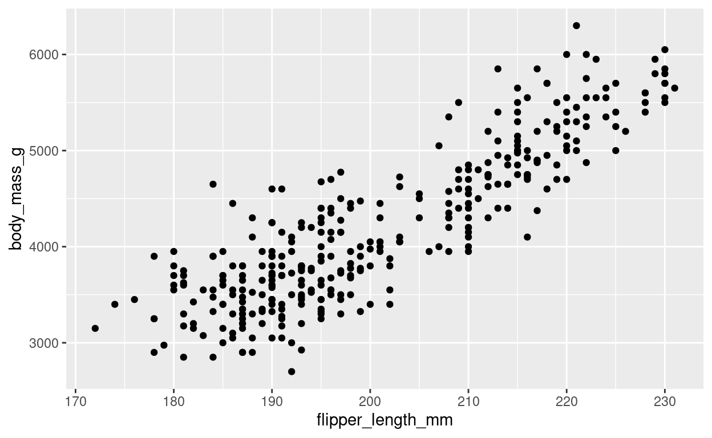
Notice the warning about two rows have NAs, so they are not plotted. We’ll turn off the warning for the remaining plots, but it is good to pay attention to these warnings.
We can pull out the data from the function and start a pipeline with it before piping to the plot function. Remember that pipes outside of ggplots use %>% but once you start a ggplot, use + to connect commands. Also, we don’t need the mapping argment in the ggplot and can go straight to ggplot(aes(...)).
Start a plot with the data and plot the bill length on the x axis and the bill depth on the y axis.
penguins %>%
...penguins %>%
ggplot(aes(x = bill_length_mm, y = bill_depth_mm)) +
geom_point()To my knowledge, {learnr} cannot check if code entered for plots is correct. So going forward, I’ll provide the correct plot, and you need to check if your plot matches it before continuing. Does the plot below match what you generated above? If so, continue. Otherwise, check your code and try again until you replicate this plot.
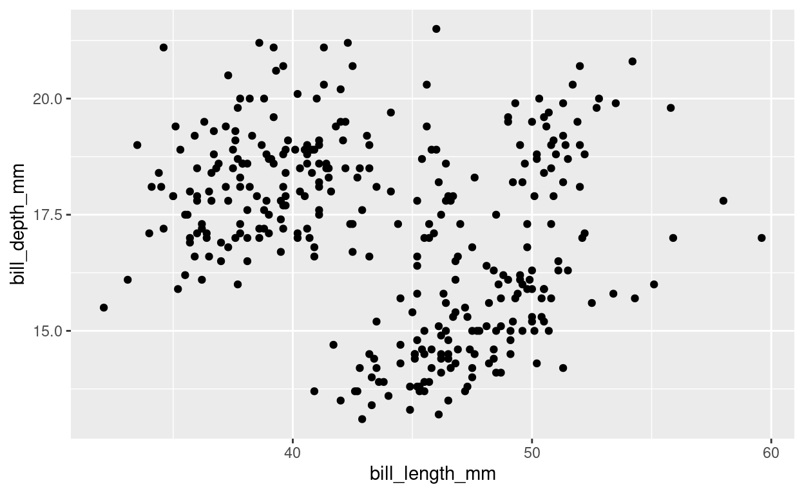
Because ggplots are part of the tidyverse, we can pipe other tidyverse commands into them. This is particularly useful if you want to filter your data for a plot but don’t want to create a new object with the filtered data. Remember the rules of piping: once you include your data once, you don’t need to include it again.
In a single pipeline, filter the penguins data to remove observations of the chinstrap penguins, then plot the bill length by bill depth as shown above.
penguins %>%
...penguins %>%
filter(species != "Chinstrap") %>%
ggplot(aes(bill_length_mm, bill_depth_mm)) +
geom_point()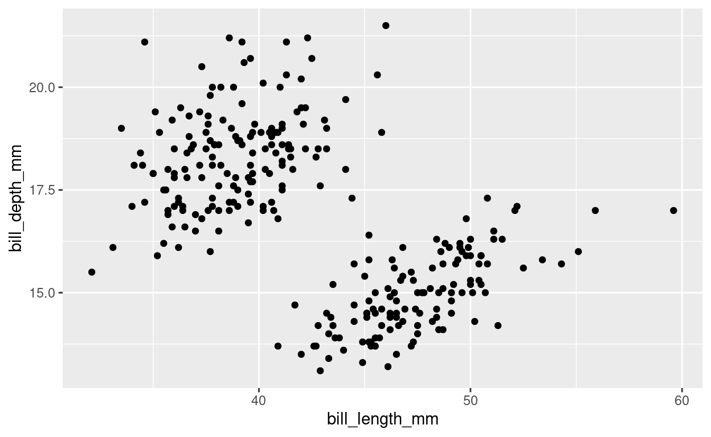
We can include multiple geometric objects in our plots, and the order that they are produced in the plot depends on the order that we present them in our code. Let’s plot the points for bill length and depth then overlay a regression line.
penguins %>%
ggplot(aes(x = bill_length_mm, y = bill_depth_mm)) +
geom_point() +
geom_smooth(method = "lm")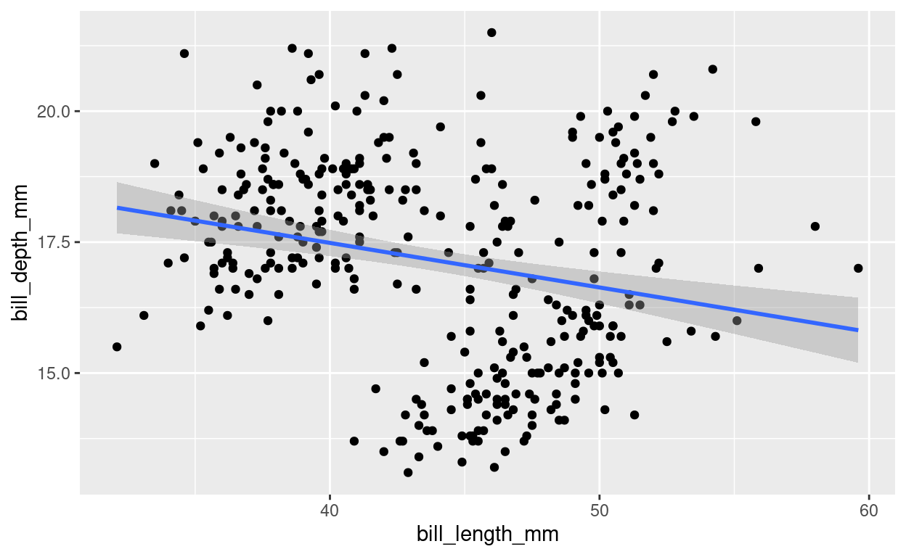
Notice that there are some data points that are visibly underneath the regression line (e.g., [35, 18]).
Now reverse the order the geoms to plot the regression line first.
penguins %>%
...penguins %>%
ggplot(aes(x = bill_length_mm, y = bill_depth_mm)) +
geom_smooth(method = "lm") +
geom_point()Do the points cover up the line now?
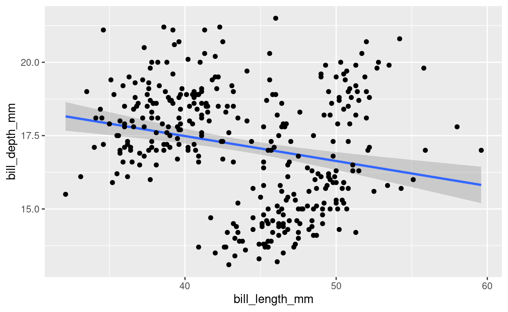
Often we want to adjust aspects of the geometric object properties (e.g., color, fill, size, shape, transparency) to change the appearance of our plots. In this case, let’s change the color of our points. To do that, we set the color argument inside the geom_point() function.
penguins %>%
ggplot(aes(x = bill_length_mm, y = bill_depth_mm)) +
geom_point(color = "seagreen")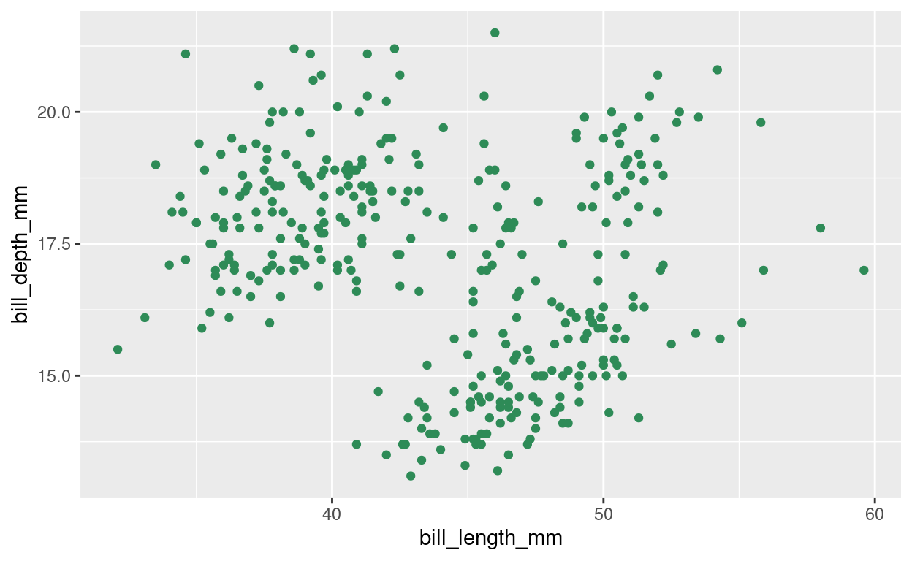
Now, in addition to making the points seagreen, set the symbol shape to filled triangles, the size to 3, and the transparency to 0.75 to match this plot:
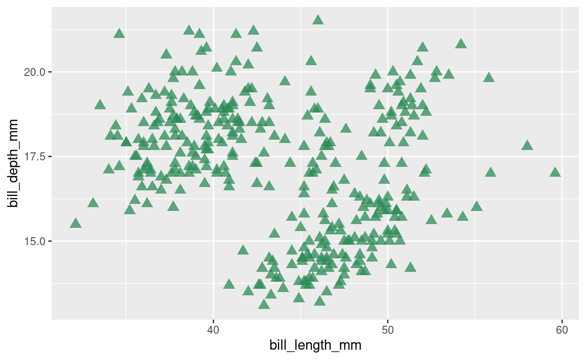
penguins %>%
...penguins %>%
ggplot(aes(x = bill_length_mm, y = bill_depth_mm)) +
geom_point(color = "seagreen", shape = 17, size = 3, alpha = 0.75)While the previous examples changed geometric object properties for the whole plot, sometimes we want to map data onto properties of our plots. These aesthetic mappings must be defined in an aes() function.
First, let’s recreate our bill length/depth plot but color the individual data points based on the penguin species.
penguins %>%
ggplot(aes(x = bill_length_mm, y = bill_depth_mm, color = species)) +
geom_point()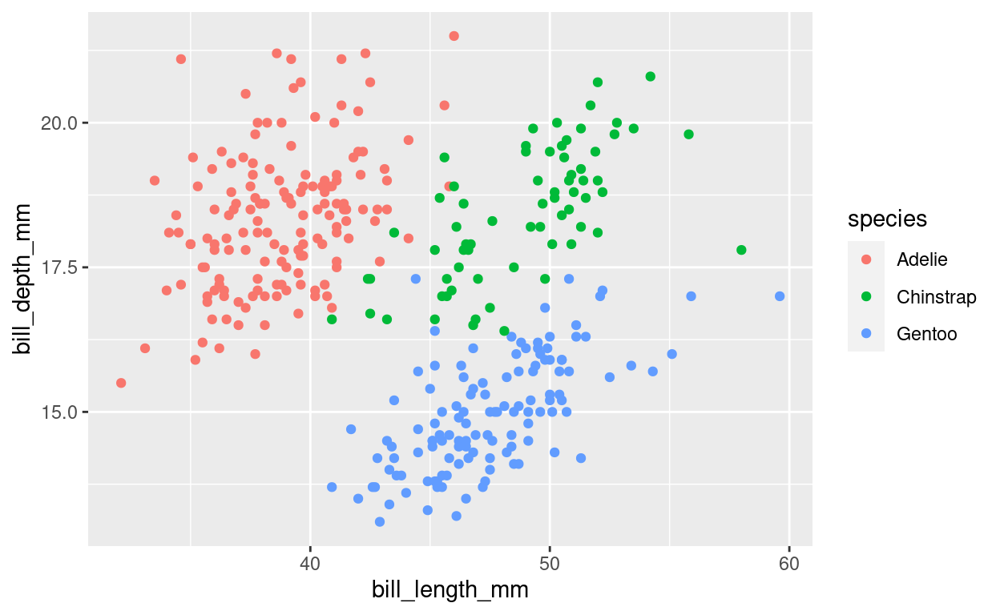
Now create a version of the plot that includes both different colors and different symbols for the different species to generate this plot:
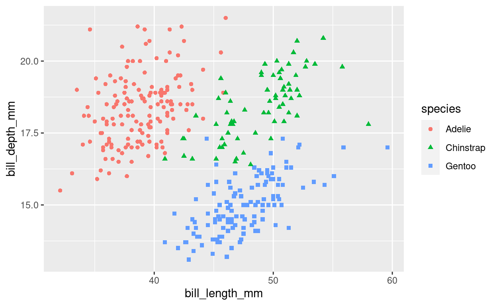
penguins %>%
...penguins %>%
ggplot(aes(x = bill_length_mm, y = bill_depth_mm, color = species, shape = species)) +
geom_point()We can now combine the last several sections to control object properties across multiple geometric objects. There are three ways to control object properties:
As we have already seen, non-mapped properties are defined in the geometric object function (e.g., geom_point()). Mapped aesthetic properties can either apply globally to all geometric objects in the plot or locally to specific geometric objects. To map aesthetics globally, include them in an aes() function in the ggplot() function at the top of the plot. To map them locally, include them in an aes() function in the individual geometric object functions (e.g., geom_point()). These can be mixed in the same plot (e.g., some aesthetics mapped globally and others locally).
Let’s start with multiple geometric objects where we define the non-mapped object property color to all geoms. To do this, we must include the color argument in all geoms that we want it to apply to.
penguins %>%
ggplot(aes(x = bill_length_mm, y = bill_depth_mm)) +
geom_point(color = "darkorchid") +
geom_smooth(method = "lm", color = "darkorchid")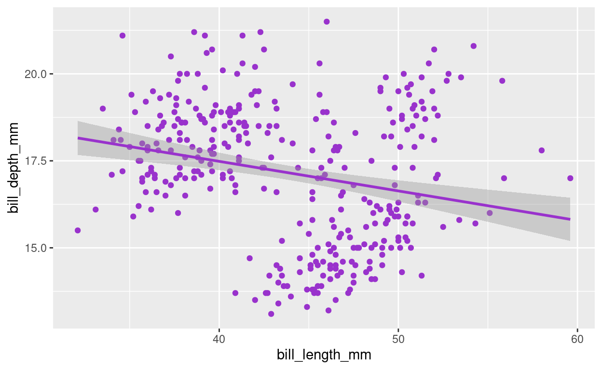
Change the color of all geoms to be tomato.
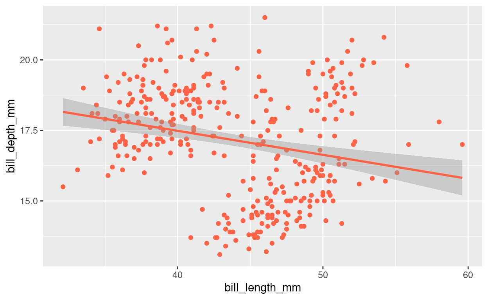
penguins %>%
...penguins %>%
ggplot(aes(x = bill_length_mm, y = bill_depth_mm)) +
geom_point(color = "tomato") +
geom_smooth(method = "lm", color = "tomato")For mapped aesthetic properties, we need to include the property argument in the aes() function that is in the ggplot() function (e.g., where x and y properties are defined).
Remove the color arguments from the geoms in the previous code. Then define color based on species in the top-level aesthetic function to generate this plot:
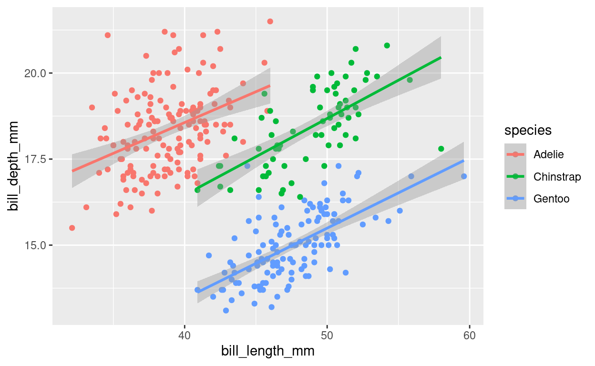
penguins %>%
...penguins %>%
ggplot(aes(x = bill_length_mm, y = bill_depth_mm, color = species)) +
geom_point() +
geom_smooth(method = "lm")Notice how putting color in the top-level aesthetic not only used different colors for the three species’ points but also created three separate regression lines—one for each species. Moreover, both the point and the regression line colors were mapped to the species. This is because we globally mapped the aesthetic color.
What if we want to map the aesthetics differently in different geoms? First, let’s go back to having a single regression line rather than one per species. But let’s keep the separate colors of points for different species. This means that we will not use global aesthetics. Instead, we will map color to species in the points and have no mapped aesthetics for the regression line.
Move the color aesthetic mapped to species from the top-level to the geom_point() to generate this plot:
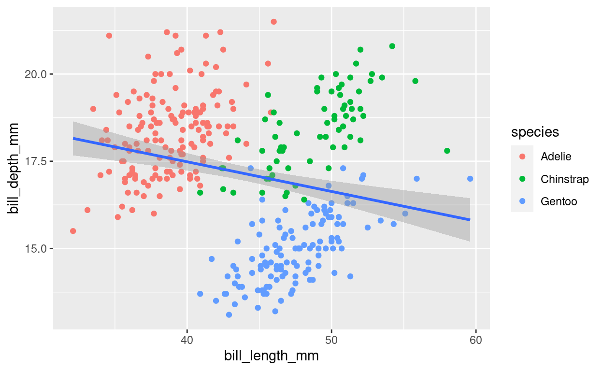
penguins %>%
...penguins %>%
ggplot(aes(x = bill_length_mm, y = bill_depth_mm)) +
geom_point(aes(color = species)) +
geom_smooth(method = "lm")Let’s say that we like the plot with separate regression lines for each species, but we don’t want the line colors to be different for each species. We can group the data based on species but not change any of the properties of the regression lines, while still allowing the data point colors to map to species.
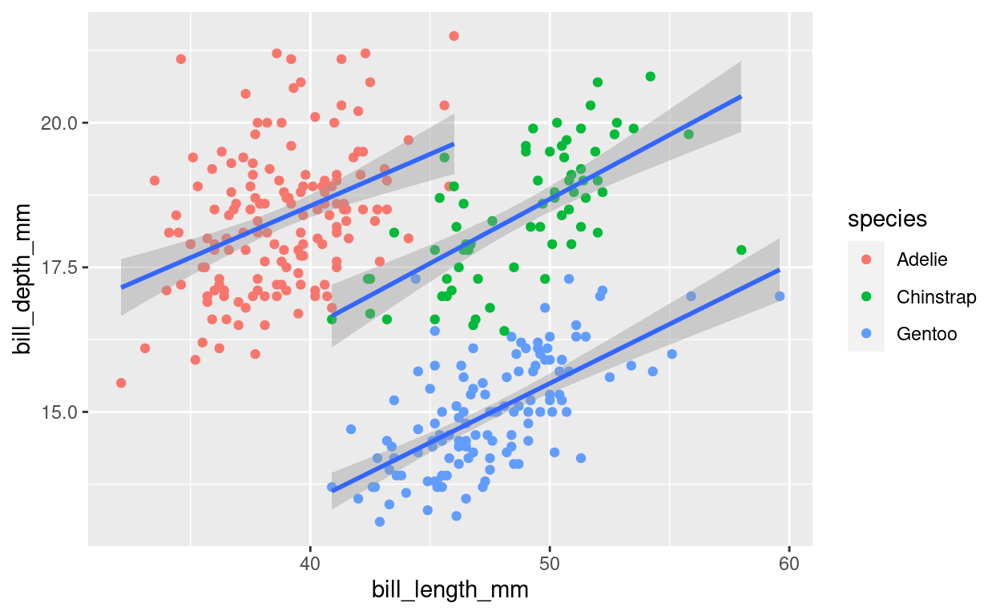
To generate this plot, add group = species to the top-level aesthetic, add color = species to the geom_point() aesthetic, and no aesthetics in the geom_smooth().
penguins %>%
...penguins %>%
ggplot(aes(x = bill_length_mm, y = bill_depth_mm, group = species)) +
geom_point(aes(color = species)) +
geom_smooth(method = "lm")Finally, I don’t like having the blue regression lines because they blend in with the gentoo penguin data.
Replicate the previous plot, but make the regression lines black.
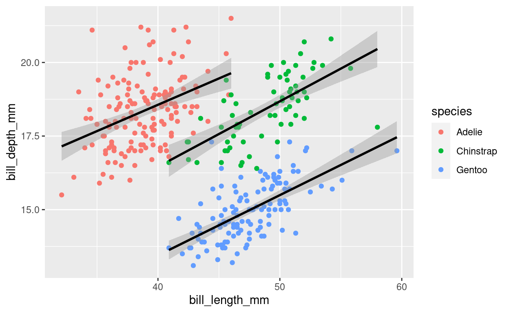
penguins %>%
...penguins %>%
ggplot(aes(x = bill_length_mm, y = bill_depth_mm, group = species)) +
geom_point(aes(color = species)) +
geom_smooth(method = "lm", color = "black")You just took your first step to begin creating amazing data visualizations in R!